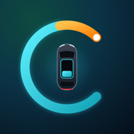

Privacy Policy
Carmeo · effective 10 November 2026 · version 2026-11-10
1. Who is responsible (controller)
Zsolt Pótor, private individual, Budapest, Hungary · e-mail: support@pzstm.app
2. What we process and why
| Data | Purpose | Legal basis (GDPR) |
|---|---|---|
| Account: e-mail address, password (stored only as a hash by our database provider), optional name, the date you accepted the terms. With Sign in with Apple: the e-mail Apple shares (it can be a private relay address). | Your account, sign-in, password reset | Contract – Art. 6(1)(b) |
Chery connection: a masked hint of your Chery login (e.g. z***@g***.com), the session tokens of your Chery account and your vehicle control PIN – encrypted (AES-256-GCM, key only on our server). The VIN is stored only as a one-way hash. | Reading your car's data and sending the commands you ask for | Contract – Art. 6(1)(b) |
| Vehicle data from your Chery account: lock and door status, battery and fuel level, range, odometer, charging, climate, tyre pressures, GPS position, and what the app derives from them: trips (start / end places and times, distance), charging and refuelling logs, timeline events, notifications, statistics. | The app's features (status, history, alerts, pre-conditioning, widgets, Live Activities) | Contract – Art. 6(1)(b) |
| Your settings: places you save (e.g. Home with coordinates), departure time and comfort settings, service data, document expiry dates you enter. | Reminders, labels, automatic pre-conditioning | Contract – Art. 6(1)(b) |
| Device data: push notification tokens, device name, a random widget token (stored only as a hash). | Notifications, widgets, Control Center buttons, Live Activities | Contract – Art. 6(1)(b) |
| Server logs (no VIN, logins masked). | Security, troubleshooting | Legitimate interest – Art. 6(1)(f) |
We do not sell data, show ads, use analytics or tracking SDKs, or build profiles. The app has no third-party advertising or analytics code.
Other drivers: the car's position and trips are recorded whoever drives it. If other people use your car, tell them that the app records this.
3. Who receives data (processors and other recipients)
| Recipient | What for | Where |
|---|---|---|
| Supabase Inc. (database, sign-in) | Stores your account and car data | EU – AWS Ireland (eu-west-1); US company: EU Standard Contractual Clauses |
| Hetzner Online GmbH | Server that talks to Chery and sends notifications | Germany (Nuremberg) |
| Brevo (Sendinblue SAS) | Sign-up and password e-mails | France (EU) |
| Apple Inc. | Push notifications, Live Activities; Sign in with Apple if you use it | USA – EU-US Data Privacy Framework / SCC |
| Open-Meteo | Weather for pre-conditioning: the car's or your Home's position, rounded to about 1 km | EU / Switzerland |
| OpenStreetMap Foundation | Map tiles: your device loads them directly, so the tile server sees your IP address and the map area | UK (adequacy decision) |
| The operator of the Chery Europe connected-car service (CHERY-Europe app – per the App Store: Omoda Motors Spain, S.L., Spain; Chery Europe GmbH, Germany) | Your car's data comes from and your commands go to your Chery Europe account. The operator is an independent controller; its own privacy policy applies. | Chery's systems |
| GitHub Inc. | Hosts this web page (sees visitors' IP addresses) | USA – DPF / SCC |
| Cloudflare Inc. | Domain name (DNS) and forwarding of e-mails sent to support@pzstm.app | USA / EU – DPF / SCC |
If your car type has no built-in picture, the app loads your car's picture from the address the Chery cloud provides; that server then sees your IP address.
4. How long we keep data
- Account, car data and logs: until you delete them or your account (Settings → Account → Delete account). Deletion is immediate and removes all data linked to the account.
- Server logs: up to 30 days. Database backups (if enabled by our provider): up to 7 days.
- Pending connection codes and notification button tokens: deleted after use or within 1 day / 12 hours.
5. Your rights
You can access, correct, delete and export your data – deletion and export directly in the app (Settings → Account → Export my data, Delete account). You can also ask for restriction or object to processing based on legitimate interest. Write to support@pzstm.app; we answer within one month.
You can complain to a data protection authority, in Hungary: Nemzeti Adatvédelmi és Információszabadság Hatóság (NAIH), 1055 Budapest, Falk Miksa u. 9–11, naih.hu.
6. Security
Encrypted connections everywhere; row-level security in the database (you can only read your own data); Chery tokens and PIN encrypted with a key that only the server has; passwords hashed; server reachable only with SSH keys; automatic security updates.
7. Children
The app is not intended for people under 16.
8. Changes
We will announce material changes in the app. The version date is at the top of this page.
Adatkezelési tájékoztató (magyar)
1. Adatkezelő
Pótor Zsolt magánszemély, Budapest · e-mail: support@pzstm.app
2. Milyen adatokat, miért kezelünk
- Fiók: e-mail-cím, jelszó (csak lenyomatként), opcionális név, a feltételek elfogadásának ideje; Sign in with Apple esetén az Apple által átadott e-mail-cím. Cél: fiók, bejelentkezés. Jogalap: szerződés teljesítése (GDPR 6. cikk (1) b).
- Chery-kapcsolat: a Chery-belépés maszkolt formája, a Chery-fiók munkamenet-tokenjei és a járművezérlő PIN titkosítva (AES-256-GCM, a kulcs csak a szerveren). Az alvázszám (VIN) csak visszafejthetetlen lenyomatként. Cél: az autó adatainak lekérése és a kért parancsok végrehajtása. Jogalap: szerződés.
- Járműadatok: zár- és ajtóállapot, akku- és üzemanyagszint, hatótáv, kilométeróra, töltés, klíma, guminyomás, GPS-pozíció, és az ezekből képzett utak, töltés- és tankolásnapló, idővonal, értesítések, statisztikák. Jogalap: szerződés.
- Beállítások: mentett helyek (pl. Otthon koordinátákkal), indulási idő, komfort- és szervizadatok, dokumentumlejáratok. Jogalap: szerződés.
- Eszközadatok: értesítési tokenek, eszköznév, véletlen widget-token (csak lenyomatként). Jogalap: szerződés.
- Szervernapló (VIN nélkül, maszkolt belépéssel): biztonság, hibakeresés. Jogalap: jogos érdek (6. cikk (1) f).
Adatot nem adunk el, nincs reklám, nincs analitika vagy követés.
Más vezetők: az autó helye és útjai attól függetlenül rögzülnek, hogy ki vezeti. Ha mások is használják az autódat, tájékoztasd őket erről.
3. Címzettek (adatfeldolgozók)
Supabase Inc. (adatbázis, bejelentkezés – EU, AWS Írország; amerikai cég: általános szerződési feltételek), Hetzner Online GmbH (szerver, Németország), Brevo (Sendinblue SAS, levélküldés, Franciaország), Apple Inc. (értesítések, Live Activity, Sign in with Apple – USA, DPF/SCC), Open-Meteo (időjárás: az autó vagy az Otthon kb. 1 km-re kerekített helye), OpenStreetMap Foundation (térképcsempék: az eszközöd közvetlenül tölti le, látja az IP-címet és a térképrészletet), a Chery Europe connected-car szolgáltatás üzemeltetője (a CHERY-Europe app kiadója az App Store szerint az Omoda Motors Spain, S.L.; Chery Europe GmbH, Németország – az adatok forrása és a parancsok címzettje; önálló adatkezelő, a saját tájékoztatója érvényes), GitHub Inc. (ennek az oldalnak a tárhelye), Cloudflare Inc. (domainnév és a support@pzstm.app címre küldött levelek továbbítása). Ha az autótípusodhoz nincs beépített kép, az app az autód képét a Chery-felhő által megadott címről tölti le, és az a szerver látja az IP-címedet.
4. Megőrzés
A fiók, az autóadatok és a naplók a törlésükig vagy a fiók törléséig (Beállítások → Account → Delete account) maradnak meg; a törlés azonnali és teljes. Szervernapló: legfeljebb 30 nap. Adatbázis-mentés (ha a szolgáltató készít): legfeljebb 7 nap.
5. Jogaid
Hozzáférés, helyesbítés, törlés, adathordozhatóság (az appban: Export my data, Delete account), korlátozás, tiltakozás. Kérés: support@pzstm.app, egy hónapon belül válaszolunk. Panasz: NAIH, 1055 Budapest, Falk Miksa u. 9–11., naih.hu.
6. Biztonság
Titkosított kapcsolat, sorszintű jogosultság az adatbázisban, titkosított Chery-tokenek és PIN, jelszólenyomat, kulcsos szerverhozzáférés, automatikus biztonsági frissítések.
7. Gyermekek
Az app 16 év alattiaknak nem szól.